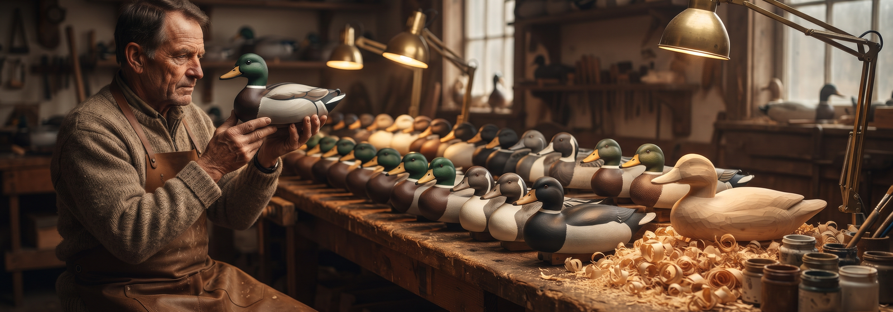

What the analyzer does
The tool compares the dependency names in a requirements file against a fixed list of widely downloaded package names and reports the ones that look like near copies, run as python3 main.py [REQUIREMENTS_FILE] [--threshold T] [--top-packages N] [--log-level LEVEL]. The requirements file is an optional positional defaulting to requirements.txt in the working directory.
The fixed list of 183 names
The comparison list is 183 names written into main.py itself. No package index is queried and nothing is fetched, so a name outside the list is never compared against anything. Asking for more than 183 entries prints a warning and uses the whole list.
How matching works
Similarity is the difflib SequenceMatcher ratio over PEP 503 normalised names, so case and separator style neither hide nor invent a match. A name identical to a list entry once normalised is skipped as not a risk. A dependency at or above the threshold (default 0.8) is reported against every close list entry, not stopped at the closest, and the reader decides which name it was aiming at.
Parameters
requirements file: optional positional (default requirements.txt in the working directory).--threshold: similarity threshold (default 0.8).--top-packages: how many entries of the comparison list to use (default 20).--log-level: logging level.
The README parameter list omits the positional entirely and leaves --threshold and --log-level undescribed, though the code help text describes both. That record stands as printed.
Exit codes
The scan's answer never moves the exit code: risks printed and a clean file both exit 0. Exit 1 is for an unreadable file, a threshold outside 0 to 1, or a non positive top count.
Record notes
The README clone line names the stale ShadowStrikeHQ organisation, its usage line is a placeholder, and its closing licence line reads Copyright (c) ShadowStrikeHQ while the LICENSE file is MIT. Those lines stand as printed.
Licence
The repository LICENSE file carries the MIT License.